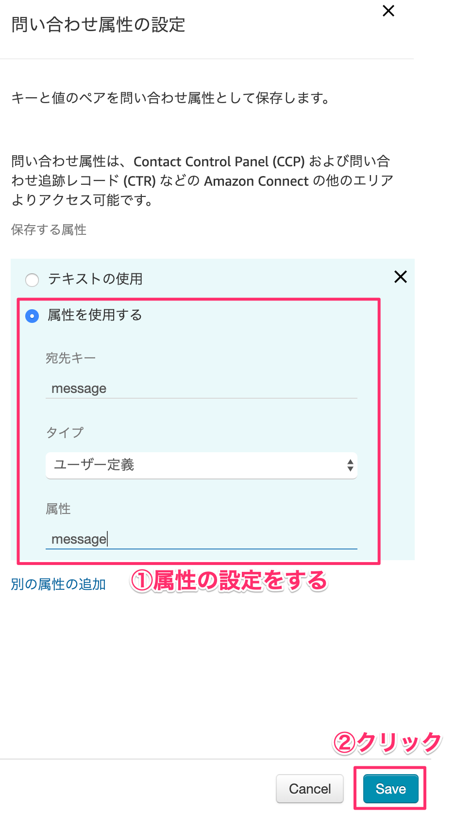
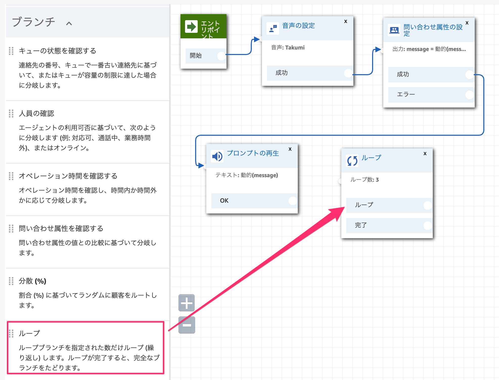
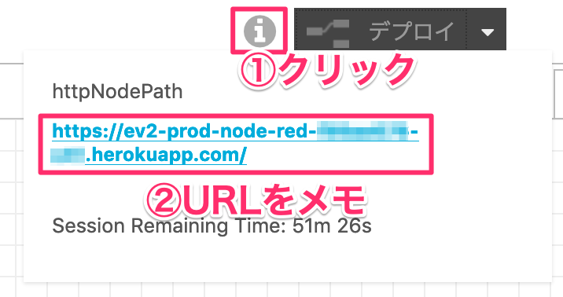

Amazon Connect電話番号取得
すでにAmazon Connectの電話番号を取得している前提で開始します。
まだ未取得な方はこちらから番号を取得しておいてください。
https://ac-handson-00.netlify.com
1-1. 問い合わせフローの作成
AWSにログインして、サービスから「Amazon Connect」を検索して、出てきたものをクリックします。

作成したインスタンスエイリアスをクリックします。
［管理者としてログイン］をクリックします。

左側メニューのルーティングから「問い合わせフロー」をクリックします。

［問い合わせフローの作成］をクリックします。

名前を「enebular-AmazonConnect」と入力します。

設定カテゴリにある「音声の設定」ブロックをドラッグアンドドロップして、ドロップしたブロックをクリックします。

言語は「日本語」でお好きな音声を選択してください。

エントリポイントと音声の設定ブロックを繋げます。

設定カテゴリにある「問い合わせ属性の設定」をドラッグアンドドロップします。
属性の設定を行います。「属性を使用する」を選択してください。
宛先キー | message |
タイプ | ユーザー定義 |
属性 | message |

ブロックを繋げます。
操作カテゴリにある「プロンプトの再生」をドラッグアンドドロップします。

属性の設定を行います。「テキスト読み上げ機能(アドホック)」を選択してください。
テキスト読み上げ機能(アドホック) | 動的に入力する |
タイプ | ユーザー定義 |
属性 | message |

ブロックを繋げます。

ブランチカテゴリにある「ループ」をドラッグアンドドロップします。
ループ回数はお好きな数を指定してください。

ブロックを繋げます。
ループとプロンプトの再生を繋げます。
終了 / 転送カテゴリにある「切断/ハングアップ」をドラッグアンドドロップします。

まだ繋いでいない部分を全て「切断/ハングアップ」に繋ぎます。

右上の①［保存］と②「公開」ボタンを順番にクリックします。

1-2. IDをメモしておく
問い合わせフローの名前の下に「追加のフロー情報の表示」という項目があるので、それを展開します。展開するとARNの情報が表示されるのでinstanceのIDとconstact-flowのIDをそれぞれメモしておきます。
2-1. Lambda関数を作成する
サービスから「Lambda」を検索して、出てきたものをクリックします。
Lambdaから新規で関数を作成します。［関数の作成］ボタンをクリックします。

関数は以下の通り入力して、［関数の作成］ボタンをクリックします。
①関数名 | enebular-AmazonConnect |
②ランタイム | Node.js 10.x |
③実行ロール | 新しいロールを作成 |
④ロール名 | enebular-AmazonConnect-Role |
⑤ポリシーテンプレート | 基本的なLambda@Edgeのアクセス権限 |

2-2. Amazon Connectアクセス権限を追加する
enebular-AmazonConnect-Roleロールを表示をクリックします。

［インラインポリシーの追加］をクリックします。
サービスを展開して、検索窓に「Connect」と入れて検索します。出てきた［Connect］をクリックします。

アクションのアクセスレベルにある「書き込み」部分を展開して、その中にあるStartOutboundVoiceContactのチェックを入れます。

すべてのリソースを選択して、右下の［ポリシーの確認］ボタンをクリックします。

ポリシー名を入力します。enebular-AmazonConnect-Policyとしました。右下の［ポリシーの作成］ボタンをクリックします。
Lambda画面に戻り、画面更新するとAmazon Connectの権限が追加されます。

2-3. プログラムを書き込む
index.jsを開き、下記プログラムをコピペしてください。
enebularからリクエストが飛んでくるので、bodyから対象値を取得します。
const Util = require('./util.js');
exports.handler = async (event) => {
const myBody = JSON.parse(event.body);
// Clovaから飛んでくるデータを取得
const message = myBody.response.outputSpeech.values.value;
const response = {
statusCode: 200,
body: {"result":"completed!"},
};
if (message != undefined) {
// Amazon Connect送信
await Util.callMessageAction(message);
}
return response;
};
新規ファイルを作成します。

下記コードをコピペしてください。
'use strict';
const AWS = require('aws-sdk');
var connect = new AWS.Connect();
// 電話をかける処理
module.exports.callMessageAction = async function callMessageAction(message) {
return new Promise(((resolve, reject) => {
// Attributesに発話する内容を設定
var params = {
Attributes: {"message": message},
InstanceId: process.env.INSTANCEID,
ContactFlowId: process.env.CONTACTFLOWID,
DestinationPhoneNumber: process.env.PHONENUMBER,
SourcePhoneNumber: process.env.SOURCEPHONENUMBER
};
// 電話をかける
connect.startOutboundVoiceContact(params, function(err, data) {
if (err) {
console.log(err);
reject();
} else {
resolve(data);
}
});
}));
};
保存する際はファイル名を「util.js」にしてください。
2-4. 環境変数を設定する
Amazon Connectと連携するための環境変数を設定します。
INSTANCEID | 1-2でメモしたinstanceのID |
CONTACTFLOWID | 1-2でメモしたcontact-flowのID |
PHONENUMBER | ご自身の携帯電話番号 ※+81を先頭につけて数字のみにします |
SOURCEPHONENUMBER | Amazon Connectで取得した電話番号 ※+81を先頭につけて数字のみにします |

2-5. API Gatewayを設定する
LINE ThingsからアクセスするためのURLを発行します。
［トリガーを追加］をクリックします。

トリガーの設定は下記を指定します。最後に［追加］ボタンをクリックします。
トリガー | API Gateway |
API | 新規APIの作成 |
セキュリティ | オープン |

APIエンドポイントのURLをメモしておきましょう

右上の保存ボタンをクリックします。

3-1. スキルチャネルの作成
下記にアクセスしてログインしてください。
https://clova-developers.line.biz/
［スキルを開発する］をクリックします。
［LINE Developersでスキルチャネルを新規作成］ボタンをクリックします。
プロバイダーがまだ無い方は作成お願いします。
新規チャネルを作成します。
チャネルはhandson-0819としました。［入力内容を確認する］をクリックします。
2つのチェックを入れてから、［スキル開発を始める］ボタンをクリックします。
3-2. スキルの設定
Extension IDとスキル名を入力します。
Extension ID | com.あなたの名前.handson-0819 |
スキル名 | コネクトスキル |

呼び出し名（メイン）を設定します。
呼び出し名（メイン） | コネクトスキル |
最後に［作成］ボタンをクリックします。

3-3. 対話モデルを設定する
Clovaと対話するためのモデルを作成します。
左側メニューの対話モデルをクリックし、［対話モデルを編集する］をクリックします。

ビルトインスロットタイプの［＋］をクリックします。
「数値と単位を取得」部分を展開してCLOVA.NUMBERを有効にします。

カスタムインテントの右側にある［＋］をクリックします。インテント名は「MainIntent」と入力し、［作成］ボタンをクリックします。
スロットリスト部分に「num」と入力し、［＋］をクリックします。
スロットタイプのプルダウンメニューからCLOVA.NUMBERを選択します。

サンプル発話リスト部分に「num」を入力し、［＋］をクリックします。

num部分をマウスで選択して、出てきたポップアップメニューでnumスロットを選択します。最後に必ず［保存］ボタンをクリックします。

ビルドを行います。約3分ほどビルドに時間がかかります。
5-1. enebularプロジェクトを作成する
いよいよenebularを使ってClovaと繋いでいきます。
enebularのページにログインしてください。
ログインしたら［Create Project］ボタンをクリックします。
プロジェクト名を入力して、［Submit］ボタンをクリックします。
プロジェクト名 | handson-0819 |
左側メニューの「Flows」をクリックし、右下の［＋］ボタンをクリックします。
Flow名を入力して、カテゴリはotherを選択し、［Continue］ボタンをクリックします。
［Edit］ボタンをクリックして、Flow画面を表示します。
5-2. Flowを作成する
Flow画面を表示して、Clovaに発話させるフローを作成します。
左側メニューの「入力」カテゴリにあるhttpノードをエディタにドラッグアンドドロップします。
ノードをクリックして、メソッドはPOSTを選択し、URLに/clovaと入力します。
機能カテゴリにあるswitchノードをドラッグアンドドロップします。
ノードをクリックして、各項目を埋めていきます。
③プロパティ | payload.request.type |
④ == | LaunchRequest |

httpノードとswitchノードを繋ぎます。
機能カテゴリにあるfunctionsノードをドラッグアンドドロップします。ノードをクリックして、コード部分に書きコードを記述します。
msg.payload =
{
"version": "1.0",
"sessionAttributes": {},
"response": {
"outputSpeech": {
"type": "SimpleSpeech",
"values": {
"type": "PlainText",
"lang": "ja",
"value": "エネブラーからこんにちは！"
}
},
"card": {},
"directives": [],
"shouldEndSession": false
}
}
return msg;
switchノードをfunctionノードを繋ぎます。
出力カテゴリにあるhttp responseノードをドラッグアンドドロップします。
このノードは特に設定することはありません。
functionノードとhttp responseノードを繋ぎます。
5-3. Clovaと連携する
画面右上の［デプロイ］ボタンをクリックして、デプロイを行います。

デプロイボタンの左にiボタンがあるのでクリックします。ポップアップで表示されるアクセスURLをメモしておきます。

Clova Developer Centerページを開きます。左側メニューの開発設定にある［サーバー設定］をクリックします。
サーバーURLに先程メモしたURLを貼り付けて、その末尾に/clovaを追加します。
5-4. シミュレーターで確認する
Clova Developer Centerページのテストをクリックします。
シナリオテストに切り替えて、［○○を起動して］ボタンをクリックします。すると、enebularで設定した値が返ってきます。
6-1. セッションの受け渡し
身長と体重を答えさせて、結果を発話する流れを作っていきます。
セッションを使って、身長データを一時的に保持して、次に来る体重の数値を使って計算してBMIを求めていきます。
まず、LaunchRequestの発話を「エネブラーからこんにちは！」から「BMIを測定するよ！身長を教えてね！」に変更します。
msg.payload =
{
"version": "1.0",
"sessionAttributes": {},
"response": {
"outputSpeech": {
"type": "SimpleSpeech",
"values": {
"type": "PlainText",
"lang": "ja",
"value": "BMIを測定するよ！身長を教えてね！"
}
},
"card": {},
"directives": [],
"shouldEndSession": false
}
}
return msg;

request.type判定をクリックして、［+追加］ボタンを2回クリックします。
プロパティ値にIntentRequestとSessionEndedRequestを追加します。
順番も気をつけてください。
→ 2 | IntentRequest |
→ 3 | SessionEndedRequest |

機能カテゴリにあるswitchノードをドラッグアンドドロップします。
ノードをクリックし、セッション値のnullチェックを行います。
payloadのsessionAttributesにセッション情報が格納されています。初回の場合は、セッション情報が無いので、null値だったらslotのheightから値を取得しています。
プロパティ | payload.session.sessionAttributes.height |
→ 1 | is not null ※プルダウンメニューから選択 |
→ 2 | is null ※プルダウンメニューから選択 |
ノードを繋ぎます

機能カテゴリにあるchangeノードをドラッグアンドドロップします。
このノードは指定した値を別の変数に格納することができます。
③値の代入 | height |
④対象の値プルダウンメニュー | msg. |
⑤対象の値 | payload.session.sessionAttributes.height |

ノードを繋ぎます。

機能カテゴリにあるchangeノードをドラッグアンドドロップし、ノードを繋ぎます。
ノードをクリックして、スロットから対象の値を取得して変数に代入します。
③値の代入 | weight |
④対象の値プルダウンメニュー | msg. |
⑤対象の値 | payload.request.intent.slots.num.value |
機能カテゴリにあるfunctionsノードをドラッグアンドドロップし、ノードを繋ぎます。
ノードをクリックして、BMI値の計算を行います。
コードは以下の通り。
const height = msg.height;
const weight = msg.weight;
const bmiVal = (parseFloat(weight) / (parseFloat(height)/100 * parseFloat(height)/100)).toFixed(1);
const speechText = `あなたのBMIは${bmiVal}です。`;
msg.payload =
{
"version": "1.0",
"sessionAttributes": {},
"response": {
"outputSpeech": {
"type": "SimpleSpeech",
"values": {
"type": "PlainText",
"lang": "ja",
"value": speechText
}
},
"card": {},
"directives": [],
"shouldEndSession": false
}
}
return msg;

出力カテゴリにあるhttp responseノードをドラッグアンドドロップし、ノードを繋ぎます。
6-2. 体重を聞き出す
身長のセッションがまだ格納されていない場合は値を一旦変数に格納しておきます。
機能カテゴリにあるchangeノードをドラッグアンドドロップし、線で繋ぎます。
ノードをクリックして、変数に格納していきます。
④値の代入 | height |
⑤対象の値プルダウンメニュー | msg. |
⑥対象の値 | payload.request.intent.slots.num.value |
機能カテゴリにあるfunctionノードをドラッグアンドドロップし、ノードを繋ぎます。
ノードをクリックして、Clovaのセッションに身長データを渡しています。
4行目のsessionAttributesにセッション情報を格納することができます。
msg.payload =
{
"version": "1.0",
"sessionAttributes": {
"height": msg.height
},
"response": {
"outputSpeech": {
"type": "SimpleSpeech",
"values": {
"type": "PlainText",
"lang": "ja",
"value": "体重をキログラムで教えてね"
}
},
"card": {},
"directives": [],
"shouldEndSession": false
}
}
return msg;
出力カテゴリにあるhttp responseノードをドラッグアンドドロップし、ノードを繋ぎます。
6-3. スキル終了に対応する
機能カテゴリのfunctionsノードをドラッグアンドドロップし、ノードを繋ぎます。
ノードをクリックして、コードを入力します。
16行目のshouldEndSessionがtrueだと会話が終わり、スキルを終了することができるようになります。
msg.payload =
{
"version": "1.0",
"sessionAttributes": {},
"response": {
"outputSpeech": {
"type": "SimpleSpeech",
"values": {
"type": "PlainText",
"lang": "ja",
"value": "ばいばい！"
}
},
"card": {},
"directives": [],
"shouldEndSession": true
}
}
return msg;

出力カテゴリにあるhttp responseノードをドラッグアンドドロップし、ノードを繋ぎます。
6-4. デプロイする
全体の図は以下の通りです。全てのノードが繋がっているか確認して、
デプロイボタンをクリックしてください。

デプロイが終われば、シミュレーターでテストしてみましょう。
身長と体重を入力するとBMIが返ってきます。
7-1. Amazon Connectから結果を聞く
BMIの結果をAmazon Connectから電話で知らせてもらいましょう。
機能カテゴリのhttp requestノードをドラッグアンドドロップし、ノードを繋ぎます。
④メソッド | POST |
⑤URL | 2-5で作成したAPI GatewayのURLを貼り付ける |
⑥出力形式 | JSON |

デプロイボタンをクリックして、再度Clovaのシミュレーターから実行してみてください。
するとAmazon Connectから電話がかかってきます。